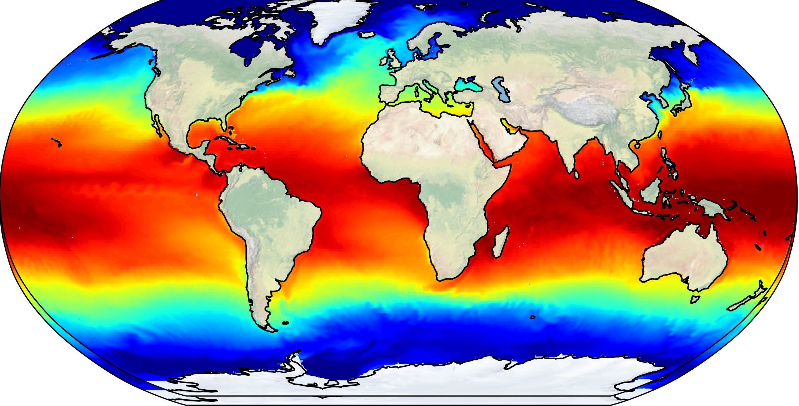
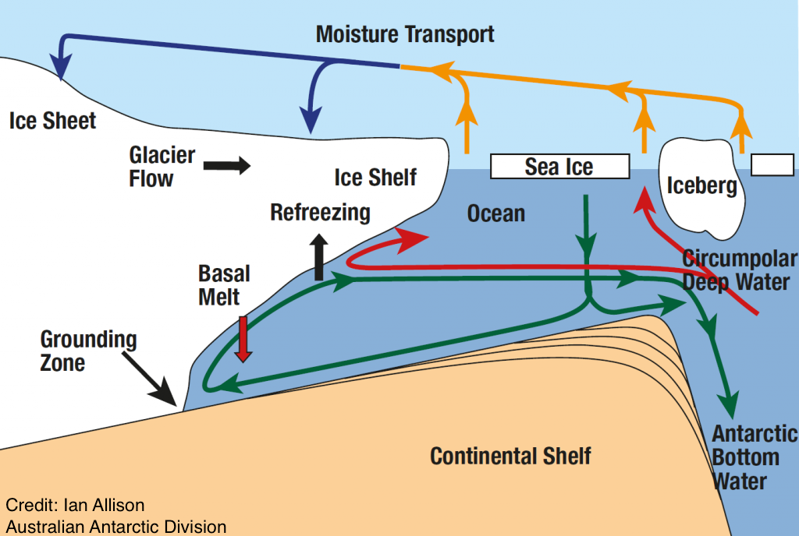

As Co-Chair of the Ocean Model Working Group (OMWG) of the Community Earth System Model (CESM), I lead the development and integration of the Modular Ocean Model version 6 (MOM6) as the ocean component of CESM. Much of this effort has focused on building and evaluating forced and fully coupled global configurations using our workhorse resolution (nominal ⅔°), the backbone of CESM3 development, while also advancing configurations spanning a broad range of resolutions, from a low-resolution 2° configuration to an eddy-permitting ¼° and a high-resolution 1/12° setup, enabling systematic assessments of how ocean resolution affects climate-relevant metrics.
Beyond the global configurations, our group has pursued complementary idealized and regional modeling efforts. On the idealized side, we have developed quasi-aquaplanet configurations — simplified, zonally symmetric setups that enable clean, process-level studies of ocean dynamics and parameterizations within a coupled framework. On the regional side, we have developed CARIB12, a high-resolution (1/12°) regional MOM6 configuration of the Caribbean Sea within the CESM framework, which serves as a testbed for regional ocean modeling and for evaluating the fidelity of ocean boundary conditions and river representation in complex coastal environments.
I am part of the Ocean Transport and Eddy Energy Climate Process Team. This CPT is a large collaborative project funded by NOAA and NSF. So far, my contribution to this project has been the development and implementation of an algorithm that applies lateral surface eddy-diffusion in MOM6.
Marques, G., Loose, N., Yankovsky, E., Steinberg, J.M., Chang, C.Y., Bhamidipati, N., Adcroft, A., Fox-Kemper, B., Griffies, S.M., Hallberg, R.W. and Jansen, M.F. (2022). NeverWorld2: An idealized model hierarchy to investigate ocean mesoscale eddies across resolutions. Geoscientific Model Development. https://doi.org/10.5194/gmd-15-6567-2022. | PDF | online
Marques, G., Shao, A., Bachman, S., Danabasoglu, G., and Bryan, F. (2023). Representing Eddy Diffusion in the Surface Boundary Layer of Ocean Models With General Vertical Coordinates. Journal of Advances in Modeling Earth Systems. https://doi.org/10.1029/2023MS003751. | PDF | online

One of the most difficult problems associated with climate change is accurately estimating how much global sea level will rise over the coming century. Part of the answer depends on physical processes that occur where the atmosphere, ocean, and cryosphere interact. These processes play a key role in controlling the melting of ice shelves — floating sheets of ice connected to a landmass. Because ice shelves buttress the glaciers behind them, their collapse can release large amounts of ice into the ocean, directly contributing to sea level rise.
My work in this area focuses on understanding the physical processes that govern circulation beneath ice shelves and the heat exchange between ice-shelf cavities and the adjacent open ocean. To this end, I have contributed to the 2nd Ice Shelf–Ocean Model Intercomparison Project (ISOMIP+) and the Marine Ice Sheet–Ocean Model Intercomparison Project (MISOMIP), conducting experiments with MOM6 and the Community Ice Sheet Model (CISM). Results from ISOMIP+ have recently been published (Yung et al., 2026), providing the community with a comprehensive multi-model assessment of ice shelf–ocean interactions. I have also developed idealized modeling frameworks to study how atmospheric forcing, wind variability, and sub-ice-shelf melting influence dense shelf water formation and export around Antarctic margins — processes central to both ice sheet stability and global ocean circulation.
Yung, C. K., X. S. Asay-Davis, A. Adcroft, et al., 2026: Results of the second Ice Shelf–Ocean Model Intercomparison Project (ISOMIP+). The Cryosphere, 20, 2053–2088, DOI: 10.5194/tc-20-2053-2026. | PDF | online
Ocean overflows (or gravity currents) occur when dense water formed along continental shelves flows towards the deep ocean over a sloped sea floor. Some of these currents play a crucial role in the large-scale ocean circulation and, therefore, are an important component in Earth's climate system. Despite recent increase in computer power, oceanic overflows are poorly represented in ocean models and this is a key challenge for improving climate predictions. One of my goals is to advance the understanding of physical processes occurring in oceanic outflows so that future observational and modeling efforts can be improved. Check the following paper to learn how overflows can generate topographic Rossby waves:
Marques, G. M., L. Padman, S. R. Springer, S. L. Howard, and T. Özgökmen, 2014: Topographic vorticity waves forced by Antarctic dense shelf water outflows. Geophys. Res. Lett., 41, 1247–1254, doi:10.1002/2013GL059153. | PDF | online
Ocean General Circulation Models (OGCMs) are the primary tools for predicting ocean currents and changes in the ocean’s stratification. Most OGCMs integrate the hydrostatic primitive equations using a variety of horizontal and vertical coordinates, mixing parameterizations and advection schemes. For problems that require relatively small spatial resolution (i.e., submesoscales and below) these models start losing validity due to the hydrostatic approximation. I've conducted a study that compares the mixing and stirring in buoyancy-driven fronts derived from two modeling approaches: 1) using an OGCM (ROMS) versus 2) using a non-hydrostatic model (Nek5000). Common OGCM's modeling choices were tested, namely spatial resolution, tracer advection schemes, Reynolds number and turbulence closures. Mixing is more sensitive to the choice of grid resolution than any other parameters tested. More details can be found in the following paper:
Marques, G. M., and T. Özgökmen, 2014: On modeling turbulent exchange in buoyancy-driven fronts. Ocean Modelling, 83, 43-62, doi:10.1016/j.ocemod.2014.08.006. | PDF | online
The western Gulf of Maine has a high concentration of sea scallops and others economically important species and, therefore, is a valuable region for the local fishing industry. Motivated by observational evidence of the formation and evolution of transient tidal eddy motions, I was part of a study that used observations and numerical simulations to elucidate the kinematics and dynamics of the tidal circulation in this region. We found that the formation and evolution of the transient eddy motions are controlled by the spatially varying influence of bottom friction on the dynamics. The full study can be found in the following papers:
Brown, W. S., and G. M. Marques, 2013: Tidal eddy motions in the western Gulf of Maine, Part 1: Primary Structure. Contin. Shelf Res., 63, S90-S113, doi:10.1016/j.csr.2012.02.008.| PDF | online
Marques, G. M., and W. S. Brown, 2013: Tidal eddy motions in the western Gulf of Maine, Part 2: Secondary Flow. Contin. Shelf Res., 63, S114–S125, doi:10.1016/j.csr.2012.02.008. | PDF | online